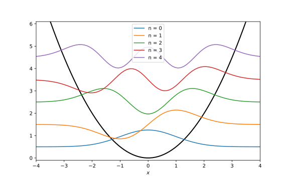

Application: Harmonic Oscillator
The quantum harmonic oscillator is described by the wavefunctions
where the functions \(H_{n}(z)\) are the physicists’ Hermite polynomials:
The corresponding energy levels are
We now want to use SymPy to compute eigenenergies and eigenfunctions.
We start by importing sympy and necessary variables:
import sympy as sp
from sympy.abc import x, m, omega, n, z
The eigenenergies are straightforward to compute. One can just use the definition directly and substitute \(n\) with an integer, e.g. 5:
def energy(n):
e = omega * (n + sp.Rational(1, 2))
return e
e_5 = energy(5)
This outputs \(\frac{11}{2}\). Note that atomic units are used for simplicity.
In order to evaluate the wave function, we have to first compute the Hermite polynomial. There are multiple ways to do it. The first is to use its definition directly and compute higher-order derivatives of the exponential function:
def hermite_direct(n):
h_n = (-1)**n * sp.exp(z**2) * sp.diff(sp.exp(-z**2), (z, n))
h_n = sp.simplify(h_n)
return h_n
Alternatively, we could use recurrence relation for Hermite polynomials. This will be left as an exercise for the course attendees.
For n = 5, we obtain the polynomial
We can then use this to evaluate the wave function:
def wfn(n):
nf = (1/sp.sqrt(2**n * sp.factorial(n))) \
* ((m*omega)/sp.pi)**sp.Rational(1, 4)
expf = sp.exp(-(m*omega*x**2)/2)
hp = hermite_direct(n).subs(z, sp.sqrt(m*omega)*x)
psi_n = sp.simplify(nf * expf * hp)
return psi_n
psi_5 = wfn(5)
For a system with, say, \(m = 1\) and \(\omega = 1\), we can construct its wave function by
psi_5_param = psi_5.subs([(m, 1), (omega, 1)])
Further substituting x with any numerical value would evaluate the
wave function at that point.
We can again convert the SymPy expression to a NumPy function and plot some wavefunctions.
import numpy as np
import matplotlib.pyplot as plt
x_values = np.linspace(-5, 5, 100)
fig, ax = plt.subplots(1, 1, figsize=(8, 5))
ax.set_xlabel('$x$')
ax.plot(x_values, 0.5 * x_values**2, c='k', lw=2)
for i in range(5):
psi_param = wfn(i).subs([(m, 1), (omega, 1)])
psi_numpy = sp.lambdify(x, psi_param)
ax.plot(x_values, psi_numpy(x_values) + (0.5 + i), label=f'n = {i}')
ax.set_xlim(-4, 4)
ax.set_ylim(-0.1, 6.1)
ax.legend()
plt.show()
This code block produces 
Sometimes one might just want to use SymPy to generate symbolic expressions
to be used in functions. Instead of typing the results in by hand, one could
use one of SymPy’s built-in printers. Here, we shall use NumPyPrinter,
which converts a SymPy expression to a string of Python code:
from sympy.printing.numpy import NumPyPrinter
printer = NumPyPrinter()
code = printer.doprint(psi_5_param)
code = code.replace('numpy', 'np')
print(code)
This output can be copied and used to evaluate \(\psi_{5}(x)\).
Since we often import NumPy with the alias np, numpy from the original
string is replaced.